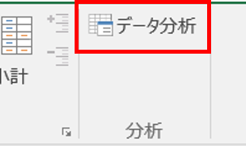
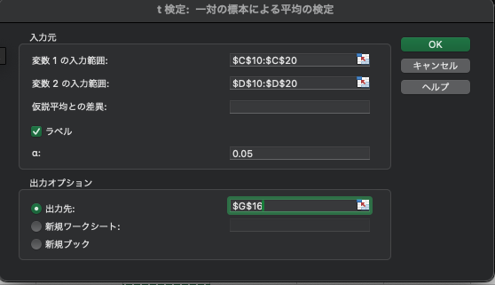
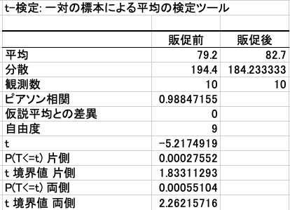

A(analysis、分析)：データに基づく分析・処理 2
検定とは（推測統計）
本章では統計的仮説検定について学習します。検定を行うことで、仮説が正しいと言ってよいのかを判断できます。
このとき、抽出された標本集団における結果から母集団においても平均の差があるのかどうかを判定するのが検定です。 また、この検定は推測統計という分野の 1 つであり、推測統計は標本集団から母集団の性質を推測するという内容です。前章で行った標本集団の集計や可視化を行うことを記述統計と呼びます。
また推測統計には検定以外にも推定という内容があり、推定は標本集団の結果から母集団の平均値や分散を推測するような内容になります。 それでは検定の詳しい内容について学習していきましょう。
t-検定
検定にはいくつかの種類がり、目的やデータの性質によって使い分けを行います。 本章では、代表的な分析手法として t 検定（平均の差の検定）と χ二乗検定を扱います。
まずは、t 検定から扱います。 t 検定は 2 標本の平均の差を証明刷るなどに使用できる検定手法です。
今回はキャンペーン前の２ヶ月まえのデータと本データの検定を行い、キャンペーンによる差があったのかどうか。（キャンペーンに効果があったのかどうか）を検定します。
対応のある t 検定（ペア t 検定）
概要: 同じ対象に対して2つの異なる時間点で測定されたデータを比較する。
例: キャンペーンの前と後で同じ店舗の売上を比較する。
適用条件: 2つのデータが対応している（ペアになっている）場合。
対応のない t 検定（独立2標本 t 検定）
概要: 別々のグループから取得したデータを比較する。
例: キャンペーンを実施した店舗と実施していない店舗の売上を比較する。
適用条件: 2つのデータが独立している（対応していない）場合。
1 標本 t 検定
概要: あるグループの平均が既知の値と等しいかどうかを調べる。
例: キャンペーン後の売上が、業界標準の売上と比較して増加したかどうかを検証する。
適用条件: データを1つの標本（グループ）から取得し、その平均が特定の値と異なるかどうかを確認する場合。
【実装】t-検定
①仮説をたてる 帰無仮説（H_0）: 2 群間の平均値に差がない（本施策に効果があるとはいえない） 対立仮説（H_1）: 2 群間の平均値に差がある（本施策に効果がある）
②有意水準を決める
今回は有意水準を 5% とします。
③ p 値を計算する
t-検定: 一対の標本による平均の検定 を使用して p 値を計算します。
ツールバーを選択し、データ→データ分析を開きます

1 対の標本による平均の検定を選択します
検定を行う列を選択します。

画像のように販促前列と販促後の列をそれぞれ選択し、ラベルを含むにチェックを入れて下さい。 出力先は同じExcelシート上の空きスペースを選択してください。設定ができましたら、OKを選択し分析を実行しましょう。
すると下記のような結果が出力されます。

P(T<=t)両側に注目しましょう。0.000551038 と優位水準を下回るため、販促前と後では有意差があると結論づけることができます。
χ二乗検定
次は、χ二乗検定について取り扱います。 カイ二乗検定は独立性の検定とも呼ばれ、A と B には関連があるかないかを調べるために使用します。使用シーンとしては、「アンケート結果について、ある質問 A ある質問 B の結果に関連があるかどうかを調べる」などです。
t 検定と混同しやすいのですが、t 検定は数値（確率）に関する検定、 カイ二乗検定はカテゴリ分けの検定とイメージを持っておくと良いです。
（カイ二乗検定は前提としてノンパラメトリックな分析手法の 1 つです。そのため分析対象とするデータは正規分布に従っている必要はありません。）
カイ二乗検定は次の手順で行います。
仮説を設定する
期待度数を求める
実測度数と期待度数から,カイ二乗値を算出
χ二乗値から P 値を算出する
またχ二乗検定の計算方法は下記の通りです。
χ二乗検定はχ二乗値と自由度を用いて、二乗分布表と見比べて有意な差があるといえるかどうか検定する手法です。
χ二乗値＝((観測度数−期待度数)²/期待度数)の総和
自由度は、行と列がある二次元の表の場合の以下のようにして計算する。 自由度＝（行の数-1）x（列の数-1）
【実装】χ二乗検定
χ二乗検定は［分析ツール］ではサポートしていませんが、CHISQ.TEST という関数を使って検定を行います。期待度数という考え方を理解し、χ二乗値を計算できるようになりましょう。
期待度数：行要素の合計や列要素の合計の比率から逆算して期待される度数のこと。期待度数に対し、実験、調査、観察などによって得られたデータに基づく度数を、実測度数、観測度数、観察度数などと言う。
【問題】 以下の仮説を調べる - 結婚状況と成約の有無は関連性があるのではないか - ワークシート_3_ を開いてください。
仮説を立てる
帰無仮説（H_0）：二つの変数は独立である。
対立仮説（H_1）：二つの変数は独立ではない（何らかの関連がある。）
有意水準を決める
今回は有意水準を 5% とします。
期待度数を求める 先程の期待度数の求め方にしたがって、以下のように求めていきます。

Excelを参考に他の値を計算し、埋めましょう。
p 値を計算する
カイ二乗検定の P 値は以下の関数を使用して算出します。=CHISQ.TEST(実測度数, 期待度数)
判定

結果は、p 値が有意水準 5% を下回りました。そのため、帰無仮説は棄却され、成約と有無と結婚状況には関連があることがわかりました。
ここまでで仮説検定を実装してきました。最後に行った χ二乗検定は、連続値であっても区切ってしまえば順位尺度として扱えるため、幅広く使用できるため便利です。
しっかりとインプットとアウトプットを意識して実装に慣れていきましょう。